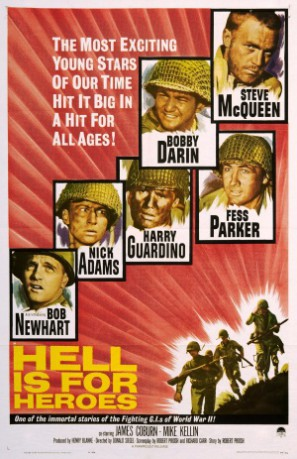
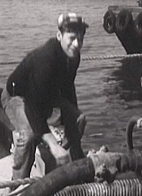

#7238 Die Ins Gras beißen
Alternativ: Hell Is for Heroes
 
 IMDB-Wertung: 7.0 / 10
IMDB-Wertung: 7.0 / 10  Metascore: 0
Metascore: 0 
World War II drama where the action centers around a single maneuver by a squad of GIs in retaliation against the force of the German Siegfried line. Reese joins a group of weary GIs unexpectedly ordered back into the line when on their way to a rest area. While most of the men withdraw from their positions facing a German pillbox at the far side of a mine-field, half a dozen men are left to protect a wide front. By various ruses, they manage to convince the Germans that a large force is still holding the position. Then Reese leads two of the men in an unauthorized and unsuccessful attack on the pillbox, in which the other two are killed; and when the main platoon returns, he is threatened with court-martial. Rather that face the disgrace, and in an attempt to show he was right, he makes a one-man attack on the pillbox.
Jahr: 1962
Dauer: 86 Minuten
FSK: 16
Land: USA Studio: Paramount PicturesTonspuren:
Untertitel:
Auflösung: 1080p (1920x1080) Größe: 6727 MB
Genre: Drama, Krieg
Regisseur: Don Siegel
Drehbuch: Robert Pirosh
Soundtrack:
Darsteller:
 Steve McQueen als Reese
Steve McQueen als Reese- Bobby Darin als Pvt. Corby
 Fess Parker als Sgt. Pike
Fess Parker als Sgt. Pike Harry Guardino als Sgt. Larkin
Harry Guardino als Sgt. Larkin James Coburn als Cpl. Henshaw
James Coburn als Cpl. Henshaw Bob Newhart als Pvt. Driscoll
Bob Newhart als Pvt. Driscoll- Nick Adams als Homer Janeczek
-  Mike Kellin als Pvt. Kolinsky
 Robert Phillips als Jeep driver
Robert Phillips als Jeep driver L.Q. Jones als Supply Sgt. Frazer
L.Q. Jones als Supply Sgt. Frazer Don Haggerty als Capt. Mace
Don Haggerty als Capt. Mace- Louis J. Gasnier als Old Man , uncredited
 Chuck Hicks als Wounded Prisoner , uncredited
Chuck Hicks als Wounded Prisoner , uncredited- Stephen Ferry als Sgt. Morgan
 Simon Prescott als Thomas
Simon Prescott als Thomas- Joseph Hoover als Capt. Loomis
- Bill Mullikin als Pvt. Cumberly
- Michele Montau als Monique Ouidel
- Richard Adams als Sergeant , uncredited
- Fred Cavens als Old Man , uncredited
- Tipp McClure als German Prisoner , uncredited
- Fred Ross als Sergeant , uncredited
- Glenn Stensel als Medic , uncredited
- James Turley als Corporal , uncredited
 Guy Way als Sergeant , uncredited
Guy Way als Sergeant , uncredited
Datei: X:\1962\Ins Gras beißen, Die (1962, FSK16, 1920x1080).mkv seit 09.10.2017
Festplatte: HD 1900-1970
 Es gibt insgesamt 23 Filme in der Gruppe '1962'
Es gibt insgesamt 23 Filme in der Gruppe '1962'